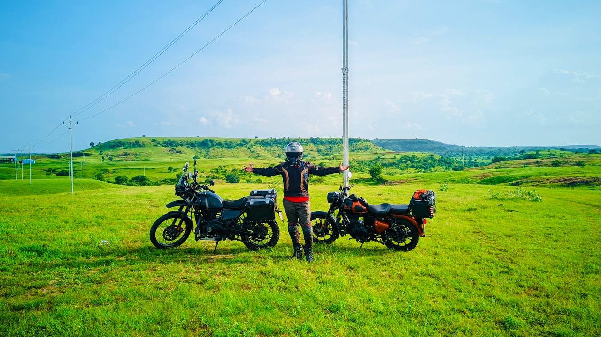
South to Maharashtra: Chasing Echoes of the Past
A Bike Ride Across States, Through Forests, Plateaus, and Centuries of Culture
Lets Travel14 Dec, 2025
Hey travelers,
It had been days since my heart started longing for a solo bike trip. I just wanted to go somewhere without much planning, no rush, just some peaceful vibes. It was friday and onam festival joy was in the air, after having a bowl of payasam made by my mother, I decided it was time. I started my journey to a quiet hill town that was on my bucket list for a long time. Welcome to my journey to the seventh heaven - Valparai.
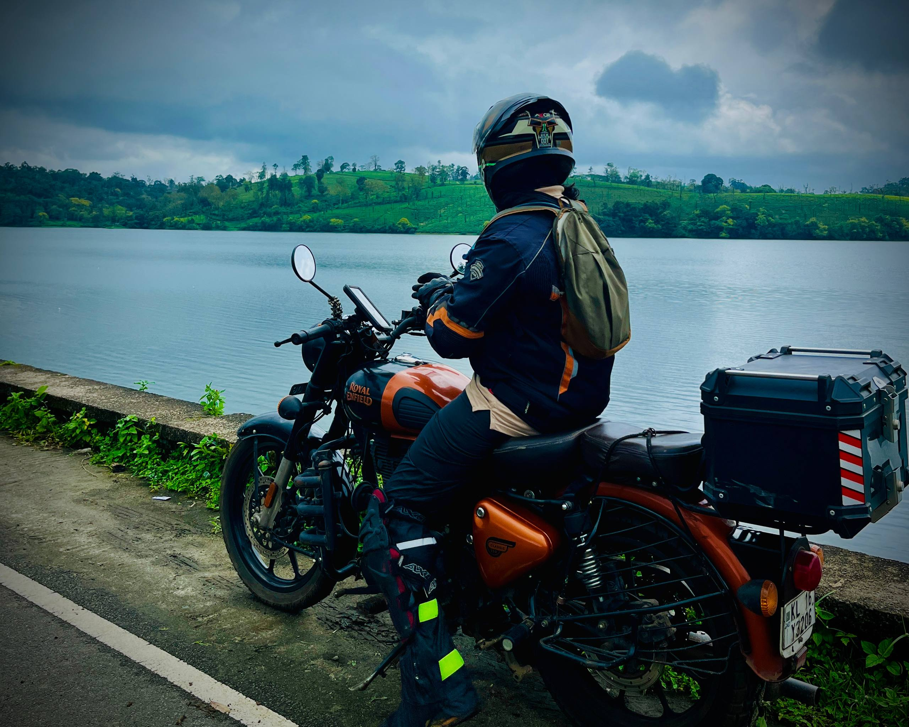
The weather was kind that day, chilly, peaceful and a little cloudy. I was prepared for rain and had my rain gear ready at my disposal. I started slowly, stopping whenever I saw a good view, like a peaceful flowing river or on a bridge with some calm winds brushing past me. I was just letting the road unfold without any hurry. At around sunset time I reached near Aluva, I went to a Club Shawaya restaurant to have amazing masala swavaya, which the restaurant was famous for.
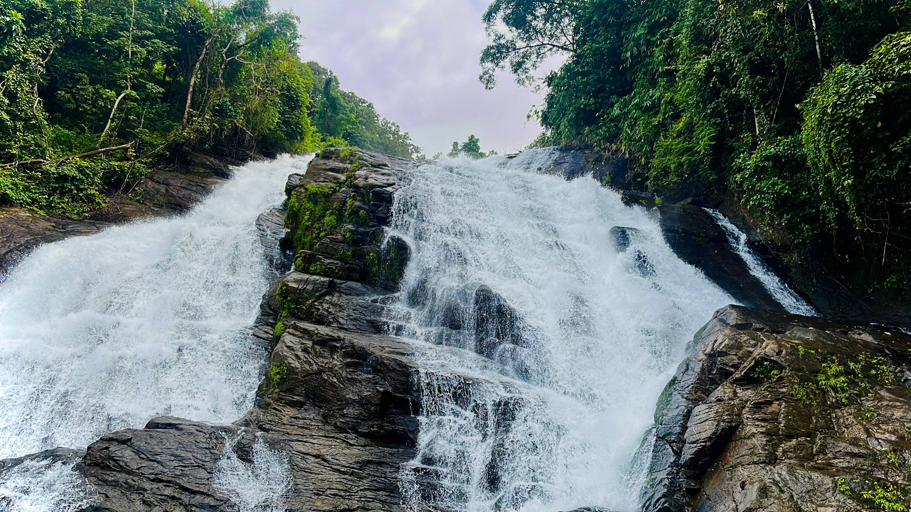
Night Arrived before I reached the stay for the day. The hotel staff suggested I visit the nearby airport view point, and showed me the way to reach it. It started to drizzle, but still I put on my rain gear and rode through the rain. Watching airplanes lift off into the dim sky, I felt an unexpected happiness, like a child looking at the sky. I watched several landings and takeoffs with joy. Families and friends gathered around, sharing laughter under umbrellas, while I stood there alone, yet somehow, not alone.
The next morning I began the journey towards the famous athirapally Valparai route. The smell of wet earth and the whisper of trees moving with the gentle winds created an almost meditative silence. The view from Vettilapara bridge was calming, the light drizzle just stopped and everything was shimmering with a soft glow.
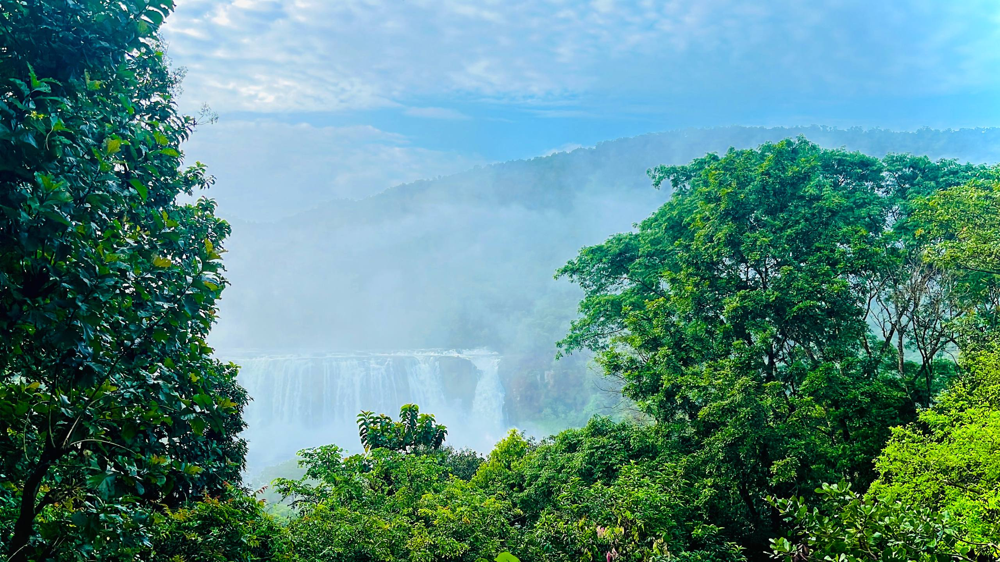
Athirapally and Charpa waterfalls were roaring in their monsoon glory. Even without entering, I could feel the power from the roadside. Nature was able to impress me even without taking a ticket. After crossing the Vazhachal checkpost, the forest truly embraced me.
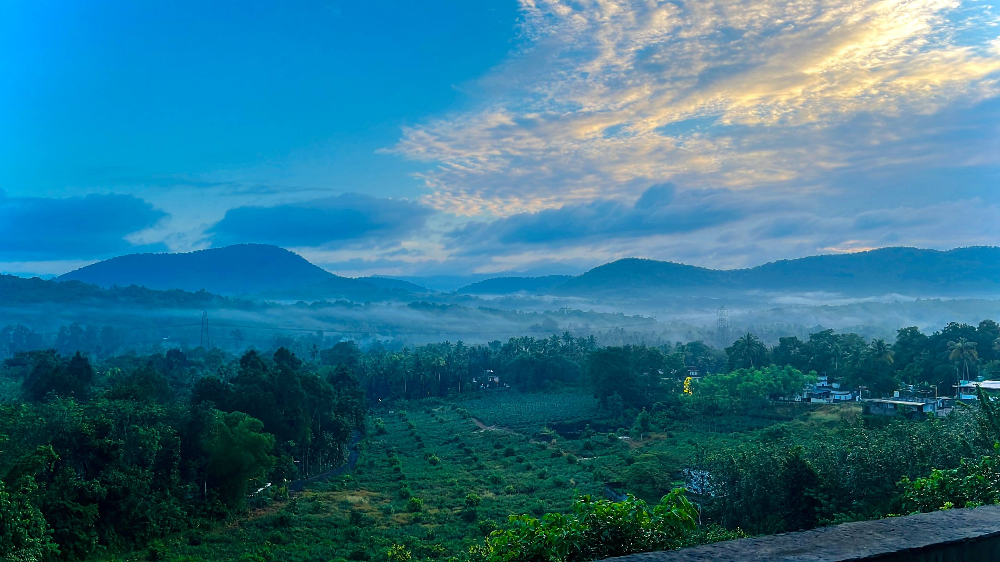
The road was narrow and winding, and the air was thick with mystery, and was driving slowly in order to spot wildlife. Somewhere in that silence, a wild elephant appeared about a hundred meters away. Elephants, the majestic creatures that help the forest move and change. I stood there for some time and observed the rightful inhabitants of the forest. Moments like these make you realize how vast and alive the world truly is.
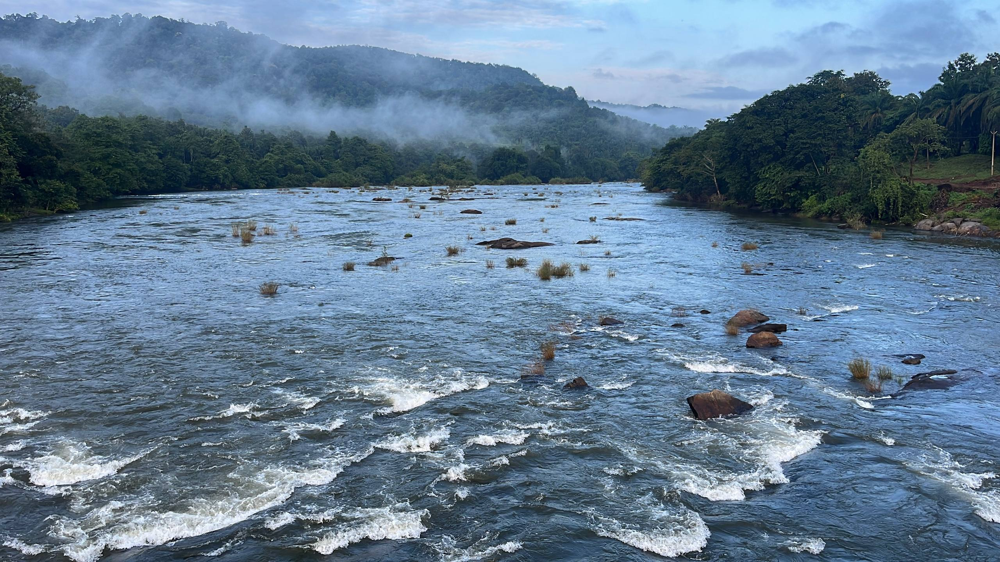
A fellow rider joined me somewhere along the way. Together, we passed dams, streams, and untouched tea plantations so pristine they looked painted. Had another close call with a snake, it slithered across the road, narrowly missing my bike. I was also fortunate to witness a pair of hornbills along the way. I felt extremely lucky and overwhelmed at the same time.
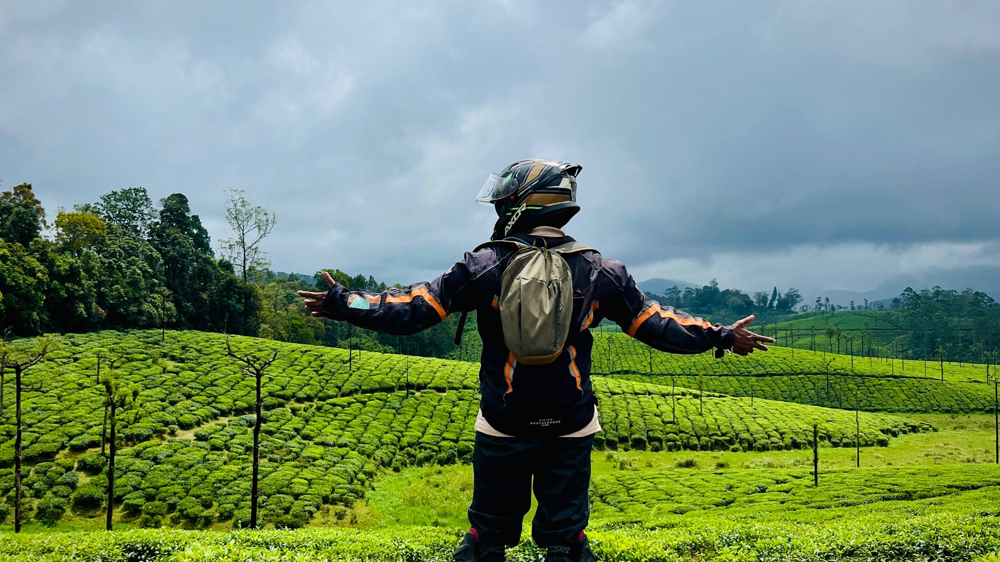
As the road climbed, Valparai revealed itself in layers of mist and green. The town itself was busy, but the journey in between was pure bliss. The thick forest, fog, winding paths, animal sightings, all added up to be a wonderful experience.
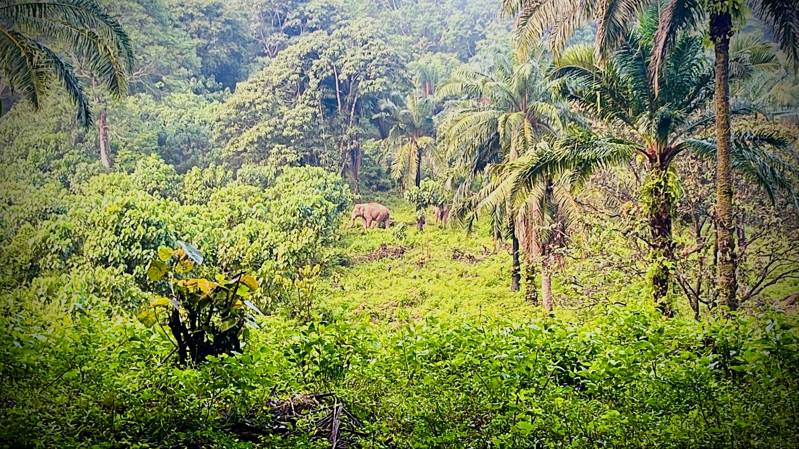
There’s something profoundly humbling about riding solo through a forest. The slow rhythm of your bike, the occasional rustle from the woods, the anticipation of the unexpected, all these things combine to make you feel more alive than ever. And also each curve is an invitation to stay curious and alert, because anything can occur at any time.
After Valparai, I aimed for Munnar before dusk. The road led me through the Amaravathi and Chinnar forests. The roads are very narrow and some parts of the forests are very dry, and filled with an unspoken eeriness. The contrast was striking: from lush green to dusty gold. Each forest had its own personality. One with a vibrant personality and the other with an ancient and mysterious nature.
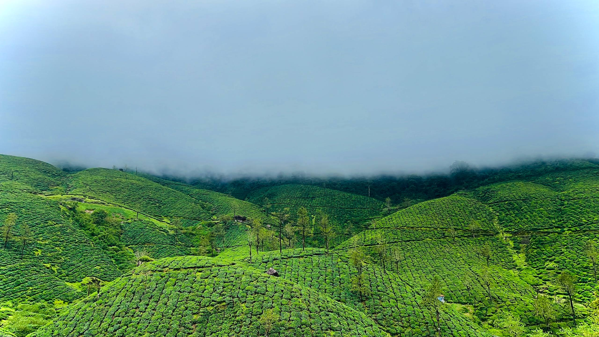
Passing through Marayoor, the scent of sandalwood filled the air. The area was filled with protected sandalwood trees. By nightfall, I reached my stay, a Zostel setup where strangers quickly became friends. Conversations flowed effortlessly, stories were exchanged, and the air carried that unique backpacker vibe that only certain places can create. I was able to meet some nice fellow travellers.
The next morning, I began the return journey with a heart full of memories. Somewhere along the way, a call came to deliver a message that there was an emergency at home. In that instant, the slow, peaceful pace of the trip shifted. I stopped romanticizing detours and focused on getting back as soon as possible.
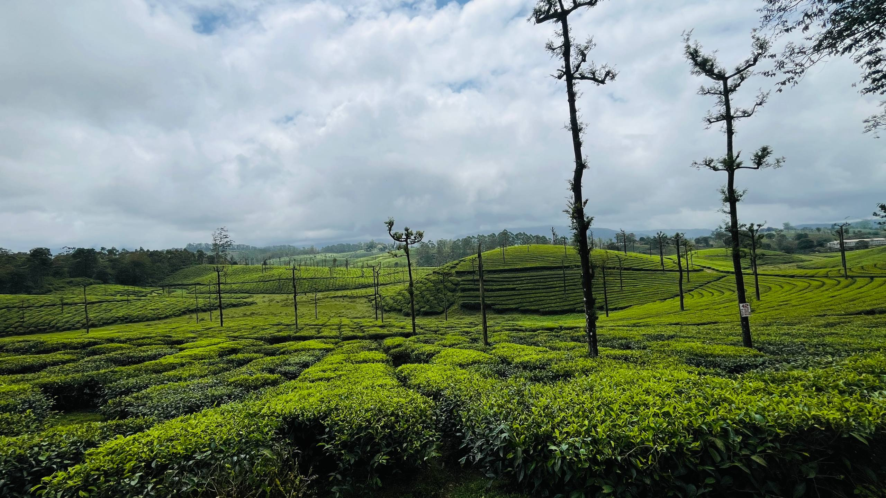
As the kilometers blurred behind me, I thought about how life works in mysterious ways. Sometimes it lets you wander freely through forests and mountains, and other times it calls you back home, grounding you, reminding you of your roots. Both are essential. Both are beautiful.
And maybe that’s what this trip was meant to teach me, that adventure and responsibility aren’t opposites. They coexist, like sunshine and rain, creating the balance that makes life truly worth living. When I finally reached home, tired yet grateful, I realized the seventh heaven wasn’t just Valparai, it was the feeling of being completely alive, between the road and the responsibilities that shape who we are.

A Bike Ride Across States, Through Forests, Plateaus, and Centuries of Culture
Lets Travel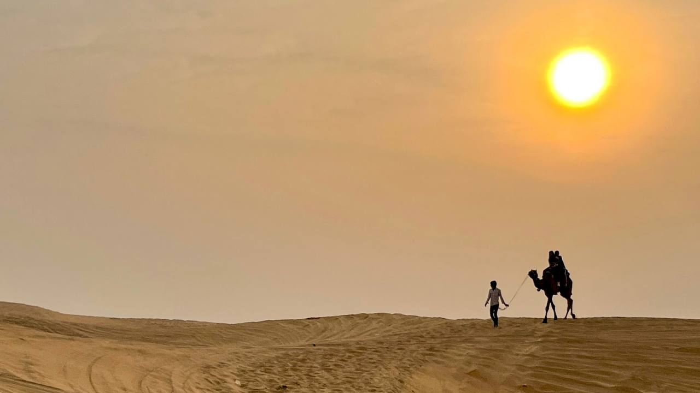
A soulful journey through Rajasthan’s majestic landscapes and timeless heritage.
Lets Travel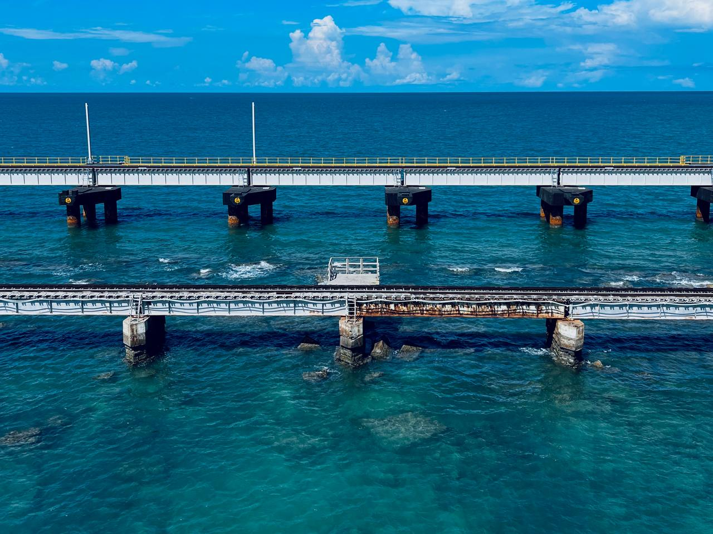
A solo trip where unforgettable experiences intertwine with unexpected misadventures
Lets Travel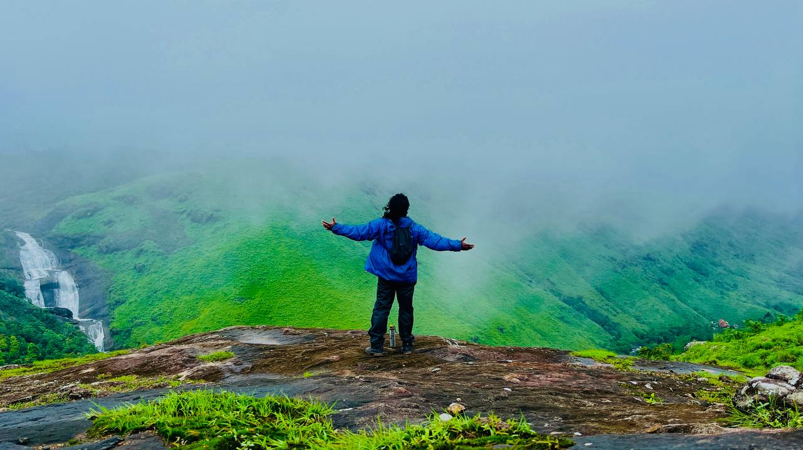
How a simple path diviation turn to an adventure
Lets Travel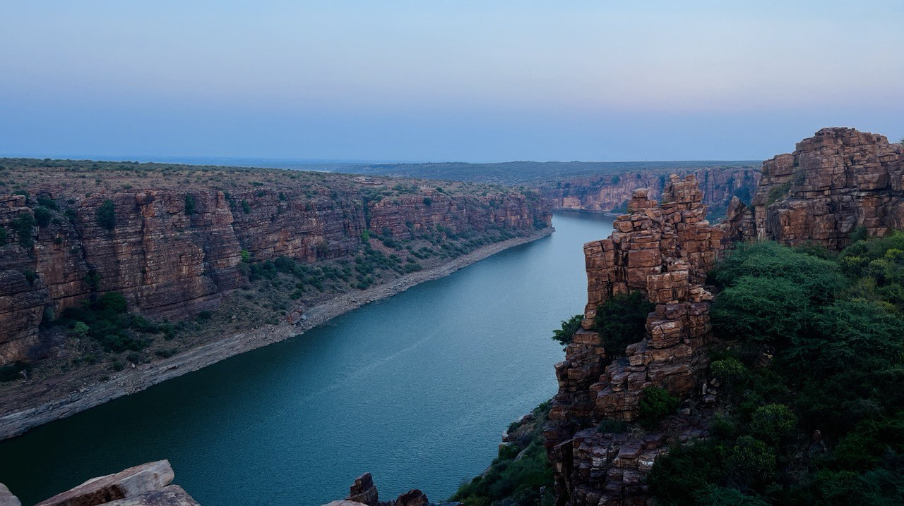
An unforgettable journey through the enchanting landscapes of Kerala, Tamil Nadu, Andhra Pradesh, and Karnataka: A Bike Expedition to Treasure.
Lets travel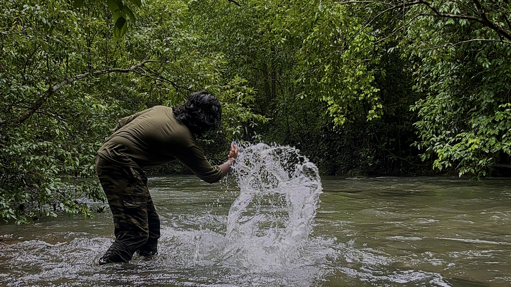
Getting to know the monsoon atmosphere and beauty of the party capital of India
Lets Travel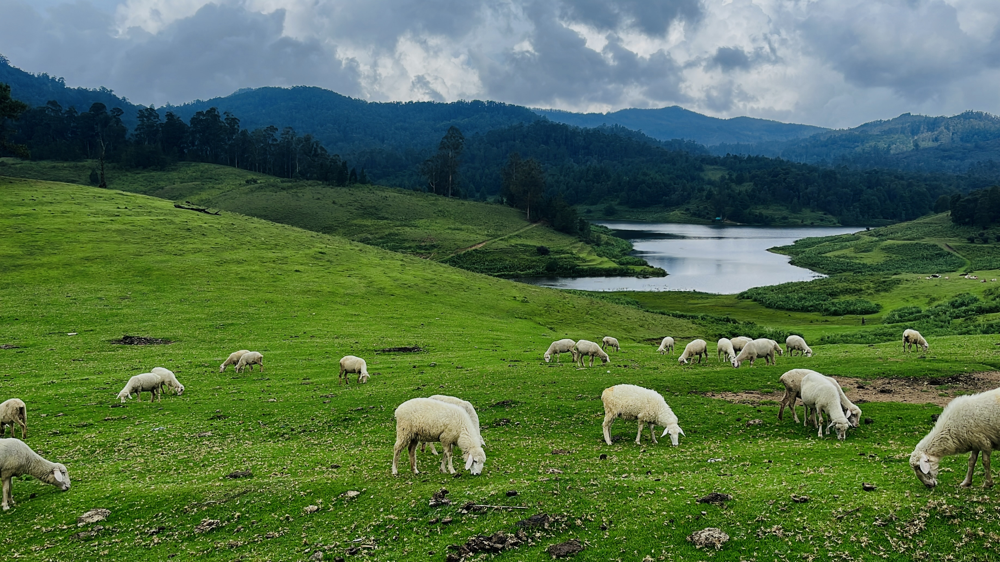
Discovering the Hidden Charms of Uncharted Kodaikanal
Lets Travel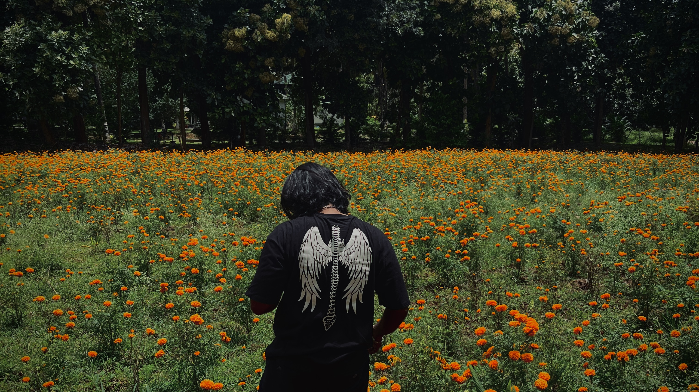
An expedition to encounter forest wildlife, vast flower fields and to enjoy the beauty of enchanting kollengode
Lets Travel